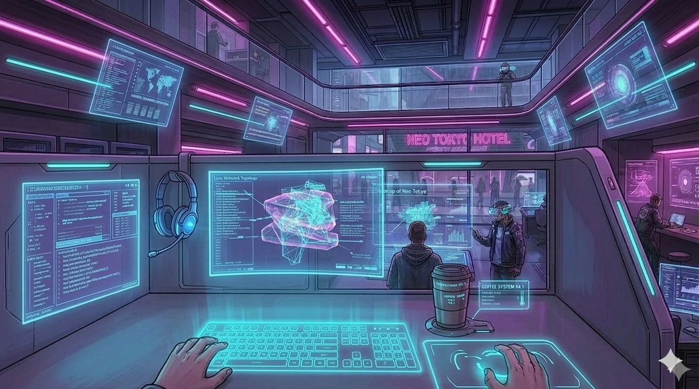

Exit
Cubicle OS
App
decompose
✕
Current task
Continue
Can it be done in 10 minutes?
Yes
No
If you say “no”, you’ll split it into smaller substeps.
Subtasks (one per line)
Start from the first subtask
Timer
10:00
Working on:
Stop / Reset
Did you finish the task?
Yes
No
If “no”, the timer will start again for the same subtask.
All steps done.
Start over